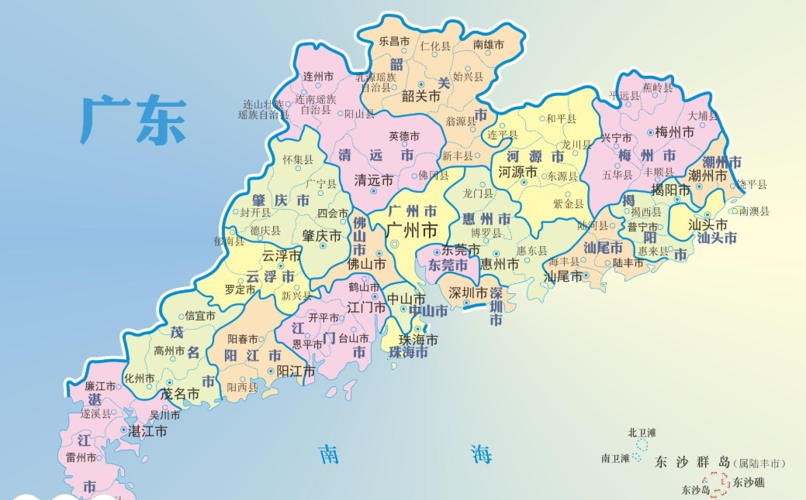
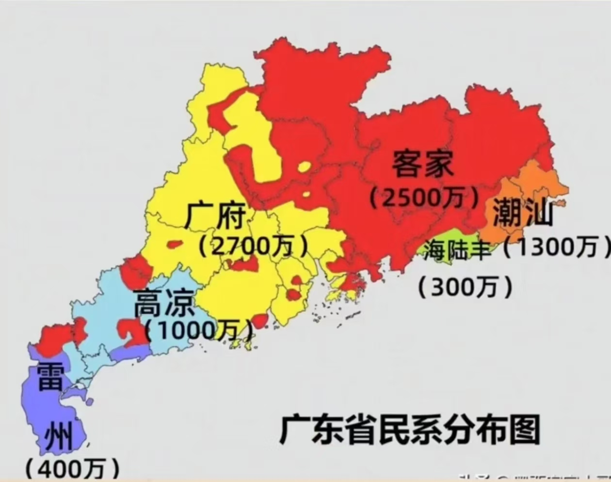
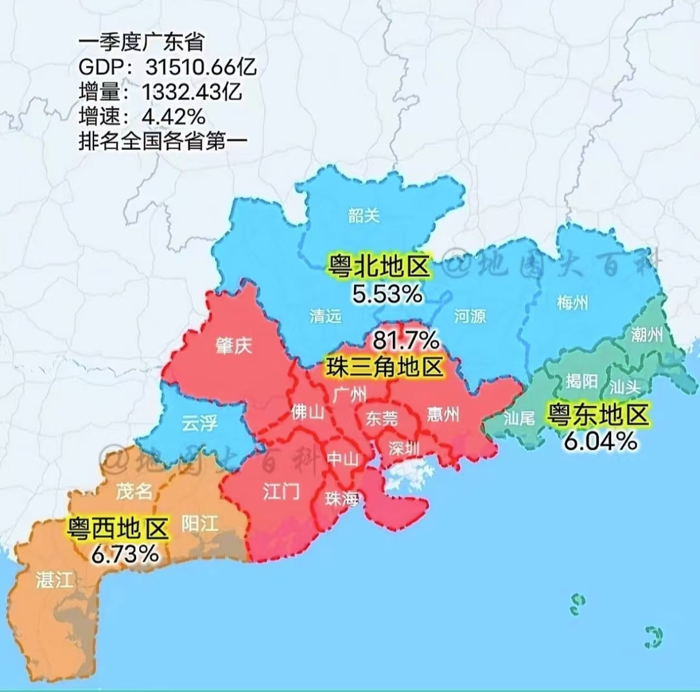
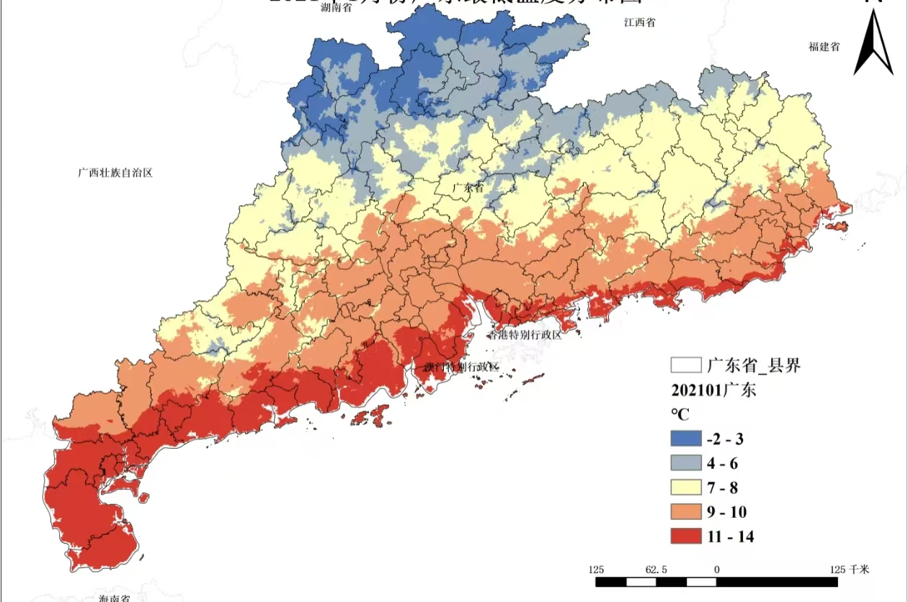

广东概况

广东，简称“粤”，中华人民共和国省级行政区，省会广州。因古地名广信之东，故名“广东”。它宛如一颗璀璨的明珠，镶嵌在南岭以南，南海之滨，与香港、澳门紧密相连，和广西、湖南、江西及福建接壤，还与海南隔海相望。广东省地处中国大陆最南部，独特的地理位置使其成为了连接内陆与海洋的重要枢纽。

2023 年常住人口约 1.27 亿，以汉族为主，同时还容纳了壮、瑶、畲等 55 个少数民族，多元的民族文化在这里相互交融，共同构成了一幅绚丽多彩的人文画卷。这里东邻福建，北接江西、湖南，西连广西，南临南海。

广东不仅拥有迷人的自然风光和丰富的人文景观，更是中国改革开放的前沿阵地。自改革开放以来，广东凭借着敢为人先的精神和开放包容的胸怀，经济发展取得了举世瞩目的成就，连续 34 年 GDP 居全国首位。在这里，古老的传统文化与现代的都市文明交相辉映，传统的骑楼老街见证着历史的变迁，而高耸入云的摩天大楼则彰显着时代的活力。

广东的气候属于亚热带季风气候，夏季高温多雨，冬季温和少雨，四季常青，为各种动植物提供了良好的生存环境。丰富的自然资源孕育了多样的生态系统，从北部的南岭山脉到南部的沿海湿地，都是大自然的瑰宝。

在经济产业方面，广东是中国重要的制造业基地，电子信息、家电、汽车、机械等产业在全国乃至全球都具有重要地位。同时，广东的服务业也十分发达，金融、物流、旅游等行业蓬勃发展，为经济增长注入了强大动力。

广东的交通网络十分发达，拥有多个国际机场和港口，是中国与世界联系的重要窗口。高速公路和铁路纵横交错，使得省内各地之间的交通十分便捷。

教育资源丰富，拥有多所国内知名高校，如中山大学、华南理工大学等，为广东的发展培养了大量的高素质人才。